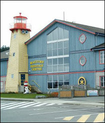

|

LocationMaritime Heritage Centre 621 Island Highway, Campbell River, BC |
About Words on the WaterWords on the Water is a festival where contemporary writers and readers meet in a beautiful west coast setting. Friday evening offers a stimulating mediated panel discussion and a brief glimpse at all of our writers. On Saturday you can attend individual annotated readings with each guest author. Sessions are 45 minutes and writers often allow time for questions. The Literary Cabaret on Saturday provides all the components necessary for an entertaining and stimulating evening: readings, music, and good food. Socializing with the writers and other like-minded readers is a key rewarding element of the festival. All weekend books by our featured writers will be on display and available for purchase. The venue, Campbell River's Maritime Heritage Centre, provides a perfect nautical backdrop for this event. |
Weekend Pass. This pass covers the entire festival: the Friday evening panel, all Saturday sessions, and the Saturday evening cabaret. $97.50
Friday Evening Panel. $30.00. This evening serves as an introduction to all of our guest writers. The writers will address questions about the craft of writing and the art of storytelling and the conversation will begin the Words on the Water Festival. The opening also features local musical talent, a no-host bar and delicious h'ors d'oeuvres. $30.00
Saturday Sessions: The Saturday readings are organized into four 90 minute sessions. Two writers are assigned to a session and each will have up to 40 minutes for a reading. Many writers leave time at the end for audience questions. Note that tickets for Saturday sessions are only sold at the door. $20.00 per session.
Saturday Evening Cabaret: A last glance at the authors and a time for stories. Includes h'ors d'oeuvres, local musical talent and a no host bar. $30.00